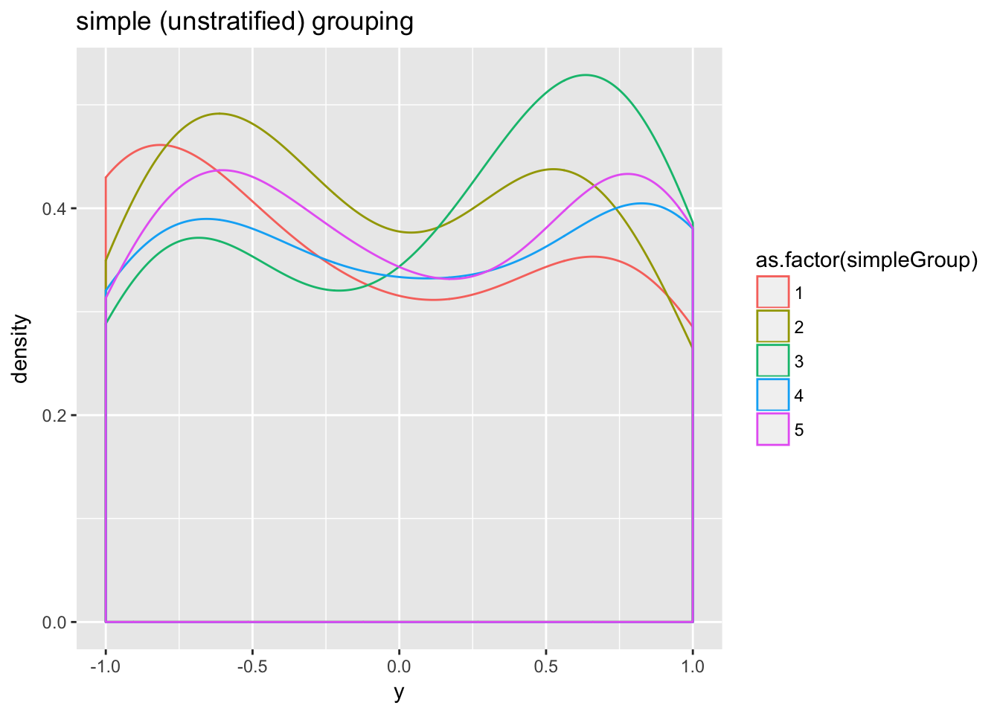
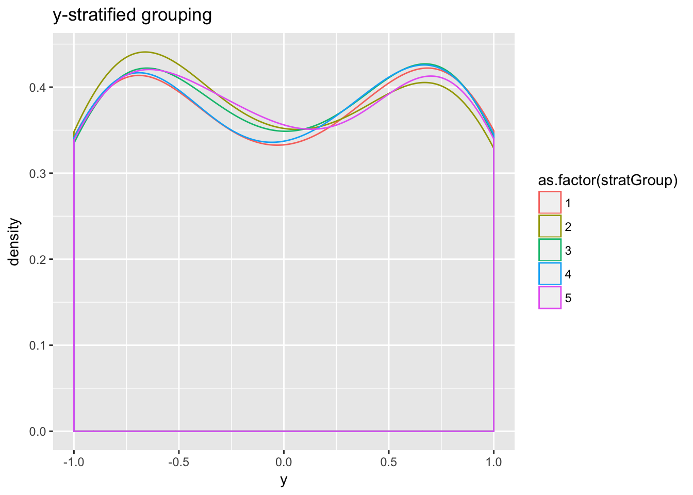

vtreat supplies a number of data set splitting or cross-validation planning facilities. Some services are implicit such as the simulated out of sample scoring of high degree of freedom derived variables (such as catB, catN,catD, and catP; see here for a list of variable types). Some services are explicit such as vtreat::mkCrossFrameCExperiment and vtreat::mkCrossFrameNExperiment (please see here). And there is even a user-facing cross-validation planner in vtreat::buildEvalSets (try help(buildEvalSets) for details).
We (Nina Zumel and John Mount) have written a lot on structured cross-validation; the most relevant article being Random Test/Train Split is not Always Enough. The point is that in retrospective studies random test/train split is at best a simulation of how a model will be applied in the future. It is not an actual experimental design as in a randomized control trial. To be an effective simulation you must work to preserve structure that will be true in future application.
The overall idea is: a better splitting plan helps build a model that actually performs better in practice. And porting such a splitting plan back to your evaluation procedures gives you a better estimate of this future model performance.
A random test/train split attempts to preserve the following:
Note if there is a concept change (also called issues of non-stationarity) then future data is already not statistically exchangeable with training data (so can’t preserve a property you never had). However even if your future data starts exchangeable with training data there is at least one (often) unmodeled difference between training data and future application data:
This is usually an unstated structure of your problem solving plan: use annotated data from the past to build a supervised model for future un-annotated data.
With the above discussion under our belt we get back to the problem at hand. When creating an appropriate test/train split, we may have to consider one or more of the following:
Stratification: Stratification preserves the distribution or prevalence of the outcome variable (or any other variable, but vtreat only stratifies on y). For example, for a classification problem with a target class prevalence of 15%, stratifying on y insures that both the training and test sets have target class prevalence of precisely 15% (or as close to that as is possible), not just “around” 15%, as would happen with a simple randomized test/train split. This is especially important for modeling rare events.
Grouping: By “grouping” we mean not splitting closely related events into test and train: if a set of rows constitutes a “group,” then we want all those rows to go either into test or into train – as a group. Typical examples are multiple events from a single customer (as you really want your model to predict behavior of new customers) or records close together in time (as latter application records will not be close in time to original training records).
Structured back testing: Structured back testing preserves the order of time ordered events. In finance it is considered ridiculous to use data from a Monday and a Wednesday to build a model for prices on the intervening Tuesday – but this is the kind of thing that can happen if the training and evaluatin data are partitioned using a simple random split.
Our goal is for vtreat to be a domain agnostic, y-aware data conditioner. So vtreat should y-stratify its data splits throughout. Prior to version 0.5.26 vtreat used simple random splits. Now with version 0.5.26 (currently available from Github) vtreat defaults to stratified sampling throughout. Respecting things like locality of record grouping or ordering of time are domain issues and should be handled by the analyst.
Any splitting or stratification plan requires domain knowledge and should represent domain sensitive trade-off between the competing goals of:
As of version 0.5.26 vtreat supports this by allowing a user specified data splitting function where the analyst can encode their desired domain invariants. The user-implemented splitting function should have the signature
function(nRows,nSplits,dframe,y)
where
nRows is the number of rows you are trying to splitnSplits is the number of split groups you wantdframe is the original data frame (which may contain grouping or order columns that you want),y is the outcome variable converted to numericThe function should return a list of lists. The ith element should have slots train and app, where [[i]]$train designates the training data used to fit the model that evaluates the data designated by [[i]]$app.
This is easiest to show through an example:
vtreat::kWayStratifiedY(3,2,NULL,NULL)## [[1]]
## [[1]]$train
## [1] 1 3
##
## [[1]]$app
## [1] 2
##
##
## [[2]]
## [[2]]$train
## [1] 2
##
## [[2]]$app
## [1] 3 1
##
##
## attr(,"splitmethod")
## [1] "kwaycross"As we can see vtreat::oneWayHoldout builds three split sets where in each set the “application data rows” is a single row index and the corresponding training rows are the complementary row indexes. This is a leave-one-out cross validation plan.
vtreat supplies a number of cross validation split/plan implementations:
kWayStratifiedY: k-way y-stratified cross-validation. This is the vtreat default splitting plan.makekWayCrossValidationGroupedByColumn: k-way y-stratified cross-validation that preserves grouping (for example, all rows corresponding to a single customer or patient, etc). This is a complex splitting plan, and only recommended when absolutely needed.kWayCrossValidation: k-way unstratified cross-validationoneWayHoldout: jackknife, or leave-one-out cross-validation. Note one way hold out can leak target expectations, so is not preferred for nested model situations.The function buildEvalSets takes one of the above splitting functions as input and returns a cross-validation plan that instantiates the desired splitting, while also guarding against corner cases. You can also explicitly specify the splitting plan when designing a vtreat variable treatment plan using designTreatments[N\C] or mkCrossFrame[N\C]Experiment.
For issues beyond stratification the user may want to supply their own splitting plan. Such a function can then be passed into any vtreat operation that takes a splitFunction argument (such as mkCrossFrameNExperiment, designTreatmentsN, and many more). For example we can pass a user defined splitFn into vtreat::buildEvalSets as follows:
For example to use a user supplied splitting function we would write the following function definition.
# This method is not a great idea as the data could have structure that strides
# in the same pattern as this split.
# Such technically is possible for any split, but we typically use
# pseudo-random structure (that is not the same across many potential
# split calls) to try and make it unlikely such structures
# match often.
modularSplit <- function(nRows,nSplits,dframe,y) {
group <- seq_len(nRows) %% nSplits
lapply(unique(group),
function(gi) {
list(train=which(group!=gi),
app=which(group==gi))
})
}This function can then be passed into any vtreat operation that takes a splitFunction argument (such as mkCrossFrameNExperiment, designTreatmentsN, and many more). For example we can pass the user defined splitFn into vtreat::buildEvalSets as follows:
vtreat::buildEvalSets(nRows=25,nSplits=3,splitFunction=modularSplit)## [[1]]
## [[1]]$train
## [1] 2 3 5 6 8 9 11 12 14 15 17 18 20 21 23 24
##
## [[1]]$app
## [1] 1 4 7 10 13 16 19 22 25
##
##
## [[2]]
## [[2]]$train
## [1] 1 3 4 6 7 9 10 12 13 15 16 18 19 21 22 24 25
##
## [[2]]$app
## [1] 2 5 8 11 14 17 20 23
##
##
## [[3]]
## [[3]]$train
## [1] 1 2 4 5 7 8 10 11 13 14 16 17 19 20 22 23 25
##
## [[3]]$app
## [1] 3 6 9 12 15 18 21 24
##
##
## attr(,"splitmethod")
## [1] "userfunction"As stated above, the vtreat library code will try to use the user function for splitting, but will fall back to an appropriate vtreat function in corner cases that the user function may not handle (for example, too few rows, too few groups, and so on). Thus the user code can assume it is in a reasonable situation (and even safely return NULL if it can’t deal with the situation it is given). For example the following bad user split is detected and corrected:
badSplit <- function(nRows,nSplits,dframe,y) {
list(list(train=seq_len(nRows),app=seq_len(nRows)))
}
vtreat::buildEvalSets(nRows=5,nSplits=3,splitFunction=badSplit)## Warning in doTryCatch(return(expr), name, parentenv, handler):
## vtreat::buildEvalSets user carve-up rejected: train and application slots
## overlap## [[1]]
## [[1]]$train
## [1] 1 3 4 5
##
## [[1]]$app
## [1] 2
##
##
## [[2]]
## [[2]]$train
## [1] 1 2 3
##
## [[2]]$app
## [1] 4 5
##
##
## [[3]]
## [[3]]$train
## [1] 2 4 5
##
## [[3]]$app
## [1] 1 3
##
##
## attr(,"splitmethod")
## [1] "kwaycross"Notice above the returned split does not meet all of the original desiderata, but is guaranteed to be a useful data partition.
The file outOfSample.R contains worked examples. In particular we would suggest running the code displayed when you type any of:
help(kWayCrossValidation)help(kWayStratifiedY)help(makekWayCrossValidationGroupedByColumn)help(oneWayHoldout)For example from help(kWayStratifiedY) we can see that the distribution of y is much more similar in each fold when we stratify than when we don’t:
library('vtreat')
haveGGPlot2 <- requireNamespace("ggplot2",quietly=TRUE)
if(haveGGPlot2) {
library('ggplot2')
}set.seed(23255)
d <- data.frame(y=sin(1:100))
# stratified 5-fold cross validation
pStrat <- kWayStratifiedY(nrow(d),5,d,d$y)
# check if the split is a good partition
check = vtreat::problemAppPlan(nrow(d),5,pStrat,TRUE)
if(is.null(check)) {
print("Plan is good")
} else {
print(paste0("Problem with plan: ", check))
}## [1] "Plan is good"d$stratGroup <- vtreat::getSplitPlanAppLabels(nrow(d),pStrat)
# unstratified 5-fold cross validation
pSimple <- kWayCrossValidation(nrow(d),5,d,d$y)
# check if the split is a good partition; return null if so
check = vtreat::problemAppPlan(nrow(d),5,pSimple,TRUE)
if(is.null(check)) {
print("Plan is good")
} else {
print(paste0("Problem with plan: ", check))
}## [1] "Plan is good"d$simpleGroup <- vtreat::getSplitPlanAppLabels(nrow(d),pSimple)
# mean(y) for each fold, unstratified
tapply(d$y,d$simpleGroup,mean)## 1 2 3 4 5
## -0.14440301 -0.06823358 0.10381743 0.05709230 0.04536831# standard error of mean(y)
sd(tapply(d$y,d$simpleGroup,mean))## [1] 0.1019753if(haveGGPlot2) {
# plot the distribution of y in each fold
ggplot(data=d,aes(x=y,color=as.factor(simpleGroup))) +
geom_density() + ggtitle('simple (unstratified) grouping')
}
# mean(y) for each fold, unstratified
tapply(d$y,d$stratGroup,mean)## 1 2 3 4 5
## 0.008582529 -0.018748598 0.004187757 0.006390630 -0.006770870# standard error of mean(y)
sd(tapply(d$y,d$stratGroup,mean))## [1] 0.01141606if(haveGGPlot2) {
# plot the distribution of y in each fold
ggplot(data=d,aes(x=y,color=as.factor(stratGroup))) +
geom_density() + ggtitle('y-stratified grouping')
}
Notice the increased similarity if distributions.